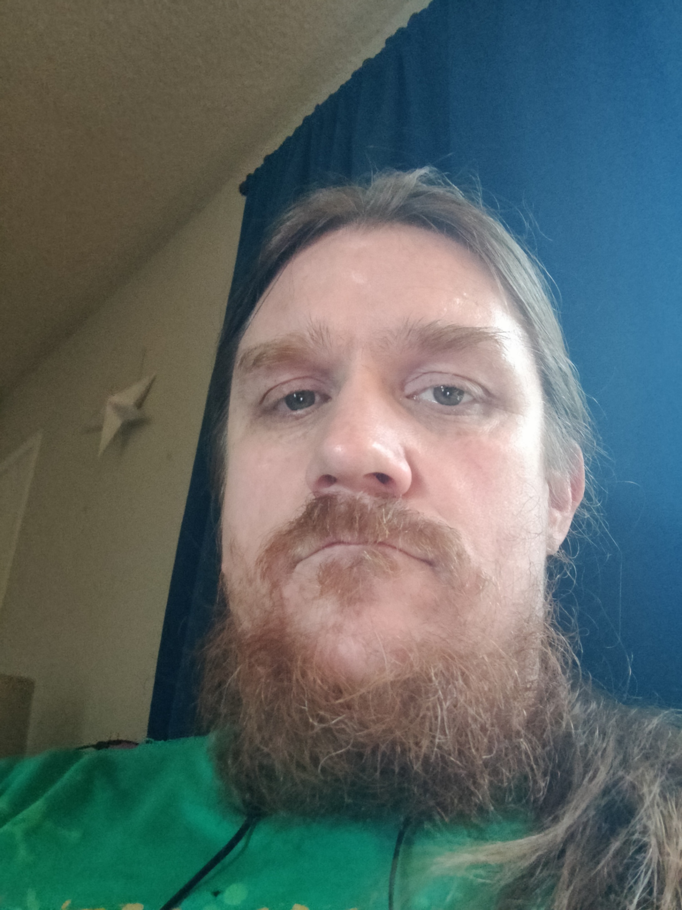

About Me
I am a 43 year old man. I have strawberry blond hair and a decent neck beard. My neck beard is required because I know a little Unix and Linux administration. If I were to shave it, then I would lose this knowledge. I love cats and dogs and playing video games. Witness the glory of my animals:


This is my orange kitty Julius. He has become quite the lap kitty in his old age. This is an older picture; he has since destroyed the cardboard couch he is sitting on.
Winnie is a skittish little black kitty with some very soft fur. She loves to be pet, but hates being noticed or seen. Therefore, her favorite time is bed time. She will come visit just as you lay down and squeak at you until you pet her.


This is Zim, our most recent addition. He is a black lab we picked up from the humane society, and we think he is approximately 2 and half years old in this picutre. He has lots of energy. Therefore his primary purpose in our house is to make sure I take him on walks three times a day. His secondary purpose is to second the death out of us by barking at squirrels and such.
I also collect skills like they're pokemon. If I spend too long not learnign anything new, I get bored and start taking colege courses. That how I ended up at Portland State University working on my Master's Degeree. I am only 9 credits or so away from completing my Master's, but that will take longer than you'd expect since I only take one calss a quarter.
Previous Work
My first "big boy job" was working at Sunquest Information Systems. I worked there for 9-1 years depending on how you count, and I worked my way up through their support department to be a instrument specialist. This was critical networking and education for me in the details of how medical instrumentation communicated and operated in general.
Then I got my bachelor's degree and got my first programming job at Sonic Healthcare Inc., where I currently work today as the Senior Instrument Interface Developer for Legacy Lab. My job consists of writing interface in ObjectSCript in order to get orders to instrument from the legacy database, and results back from those instrument into the legacy database. This normally requires parsing standard communication protocols like ASTM or HL7 and extracting the relevant Name/Value pairs for storing as patient results.
It is also never that easy. Vendors routinely feel free to add their own unique interpretations to those standard protocols, or even invent their own custom protocol from whole cloth.
Projects
Rust
This is a small Rust project using the Bevy framework to render a solar system. This represents early work such that a central "sun" is orbited by a random assortment of planets in fixed circular orbits. There was a plan to update the engine to apply some actual physics and allow for elliptical obrbits, but that has not been implemented yet.
Java
Python
This is a small GAN based on the fashion MNIST database. You should be able to download the .py file linked above and run it.
!!!Caution: it will download the Fashion MNIST dataset to the folder you run it from!!!
This is a small GAN based on the fashion MNIST database. You should be able to download the .py file linked above and run it.
!!!Caution: it will download the Fashion MNIST dataset to the folder you run it from!!!
This is an AI approrach to solving the problem of placing 8 queens onto a chessboard such that no queen threatens another queen.
TypeScript
This is a small text adventure made in TypeScript
This is an implementation of a 4-player [Snake](https://en.wikipedia.org/wiki/Snake_(video_game_genre)) game, where each player is controlled by a different piece of AI code. (The AI code is very, **very** basic! You will be able to understand this codebase even if you've never studied AI.) You are a developer at an organization that wants to ship this game to users. People will "play" the game by trying to program clever AI agents (or "bots") to compete against other people's AI agents.